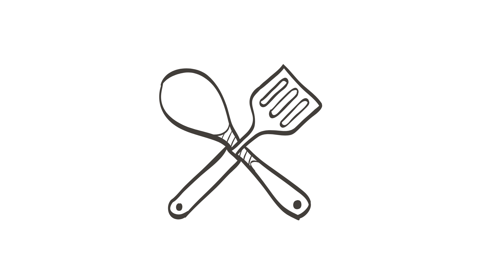

This elegant strawberry panna cotta is surprisingly easy to make. In fact, it has just 5 ingredients and takes 10 minutes to prepare. Hence, it's a perfect make-ahead dessert for entertaining guests.
The cream mixture – A basic panna cotta is made with cream, milk, gelatin, and sugar. The fruit variation – Today, we add the strawberry puree to give this a strawberry flavor.
Pulse the strawberries
Prepare PANNA COTTA